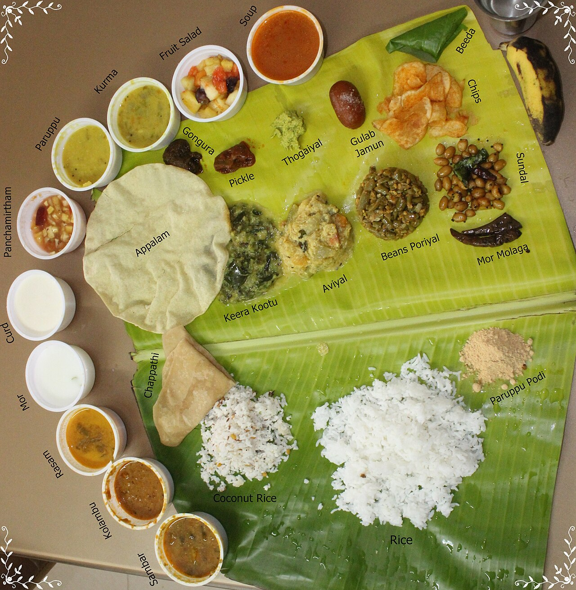

München: Namma Tamil Nadu Food Fest mit sechs Regionalküchen
Munich Tamil Kudumbam e.V. lud am 20. Juni zum „Virunthombal 2026“: Gerichte von Thondainadu bis Nanjilnadu an der Forstenrieder Allee.

Einen Tag lang drehte sich in München alles um die Küche Tamil Nadus: Am Samstag, 20. Juni 2026, lud der Verein Munich Tamil Kudumbam e.V. zum „Namma Tamil Nadu Food Fest – Virunthombal 2026“ an die Forstenrieder Allee 178. Los ging es um 11 Uhr.
Virunthombal ist das tamilische Wort für Gastfreundschaft, und darum ging es: Der Verein versprach Gerichte aus verschiedenen Regionen Tamil Nadus in traditionellem Rahmen. Angekündigt waren sechs Regionalküchen, von Thondainadu im Norden über Cholanadu, Pandiyanadu, Kongunadu und Chettinadu bis Nanjilnadu.